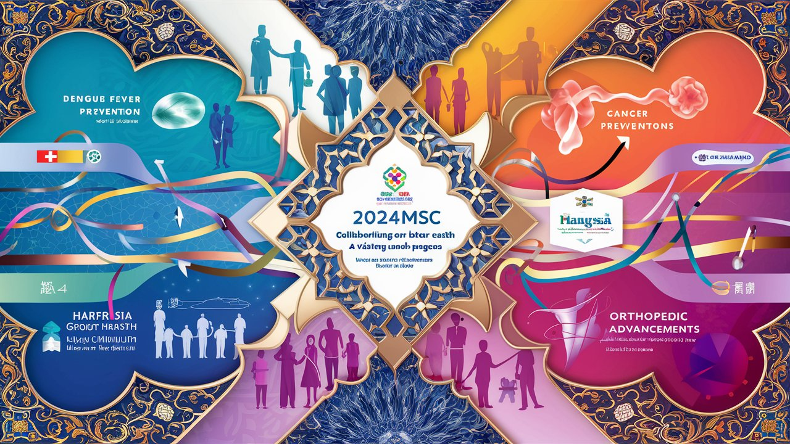

2024 Multidisciplinary Specialty Conference

Collaborating for Public Health: Sharing Knowledge, Saving Lives
Brought you by Taiwan Medical Mission (TMM) in the Republic of Somaliland
2024 Multidisciplinary Specialty Conference (#2024MSC)
Date: Saturday, 11 May, 2024
Time: 08:30 AM - 12:40 PM
Venue: Conference Hall (1F), Carro Edeg Hotel, Hargeisa, Somaliland
This year, we have 3 topics:
Taiwan Cares: Somaliland Dengue Control Project
Esophageal cancer, Hepatoma, Breast cancer, and Digital pathology in Somaliland
Orthopedic training in HGH and Taipei Municipal Wanfang Hospital
512 International Nurse Day, on 12th May 2024
Esteemed colleagues, healthcare professionals, and distinguished guests
It is our great pleasure to invite you to the 2024 Multi-Specialty Conference (2024MSC), a groundbreaking event that will bring together brilliant minds from Taipei Municipal Wanfang Hospital (TMWH) and Hargeisa Group Hospital (HGH). This extraordinary collaboration aims to foster knowledge exchange, forge new partnerships, and ultimately improve public health outcomes in both Taiwan and Somaliland.
Join us on Saturday, 11 May, 2024, at the stunning Conference Hall of Carro Edeg Hotel in Hargeisa, where we will deliver critical topics that shape the future of healthcare. From the pressing issue of dengue fever prevention and control to the latest advancements in managing breast cancer, esophageal cancer and hepatoma, our expert speakers will share their invaluable insights and experiences.
Prepare to be amazed as we will unveil a groundbreaking milestone in Somaliland’s healthcare history! In 2024, the specialists of general surgery from Taiwan Medical Mission (TMM) and Hargeisa Group Hospital (HGH) are joining forces to introduce the first-ever laparoscopic surgery in a public hospital in Somaliland in the near future. This revolutionary technique, also known as minimally invasive surgery, promises to transform the surgical landscape, offering patients faster recovery times, less pain, and reduced scarring. With the expertise of TMM’s renowned surgeon and the dedication of HGH’s skilled medical team, we are poised to usher in a new era of surgical excellence. Witness history in the making as we push the boundaries of what’s possible, bringing cutting-edge technology and innovative techniques to the forefront of patient care. Get ready to be inspired by this extraordinary collaboration that will redefine surgical standards and elevate healthcare to new heights in Somaliland!
But that’s not all! We will also explore the exciting world of orthopedic training, as we showcase the incredible programs at HGH partnered with University of Hargeisa and TMWH. This is a unique opportunity to learn from the best and forge lasting connections with fellow professionals who share your passion for excellence.
Don’t miss this chance to be a part of a truly transformative event that will inspire, educate, and empower you to make a real difference in the lives of your patients and communities.
Register now and secure your spot at the 2024MSC, where together, we will collaborate for public health, share knowledge, and save lives.
We look forward to seeing you there!
Online registration Closed [2024/05/10 23:00]
(Lunch will be provided for registered participants only following the conference.)
Acknowledgement
We would like to express our sincere gratitude to Dr. Deq Said Jama, Director of the WHO Office in Hargeisa, for his invaluable contribution to the 2024 Multi-Specialty Conference. Although Dr. Deq is unable to attend the conference in person due to prior commitments, his support and dedication to the improvement of public health in Somaliland have been truly remarkable.
Dr. Deq has graciously provided the conference organizers with the WHO-prepared Dengue slides, which will be presented by Dr. Jamal Tex Li-Hsing Chi, Chief of the Taiwan Medical Mission, and Dr. Ahmed Abdi Hersi, internal medicine specialist in Hargeisa Group Hospital. These slides contain crucial information on the WHO Dengue Fever Recommendations and Strategies, which will undoubtedly benefit the conference attendees and contribute to the overall success of the event.
We are deeply appreciative of Dr. Deq’s efforts in sharing this valuable resource with us, despite his inability to attend the conference. His commitment to advancing medical knowledge and promoting best practices in the management of dengue fever is commendable.
On behalf of the organizing committee, speakers, and attendees of the 2024 Multi-Specialty Conference, we extend our heartfelt thanks to WHO’s support and collaboration. We look forward to future opportunities to work together in the fight against dengue fever and other public health challenges facing Somaliland.